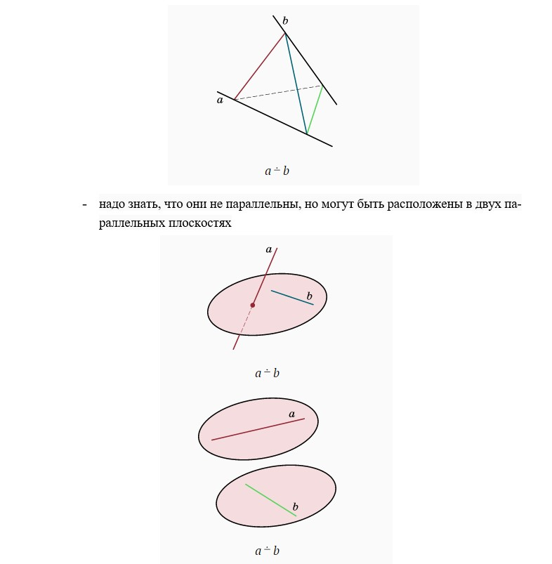

ПРЯМЫЕ И ПЛОСКОСТИ В ПРОСТРАНСТВЕ
1.Способы задания плоскости:

Это перечисление означает, что существует одна и только одна плоскость, проходящая через указанные объекты: три точки, не лежащие на одной прямой, прямую и точку вне ее, две пересекающиеся прямые.
2. Расположение двух плоскостей:
- плоскости не имеют общих точек, не пересекаются. В этом случае говорят, что плоскости параллельны
- имеют общие точки, пересекаются. В этом случае утверждается, что две плоскости пересекаются по прямой. Это означает, что общие точки двух пересекающихся плоскостей составляют некоторую прямую
3. Расположение прямой и плоскости:
5. Как узнать, являются ли две прямые скрещивающимися:
- найти плоскость, в которой лежит одна из этих прямых, а вторая пересекает эту плоскость, но при этом в точке, не лежащей на первой прямой

Со времен Евклида взаимоотношения между первичными понятиями описываются некоторыми соглашениями — аксиомами, из которых можно логическим путем получать новые следствия.
Что можно сказать о взаимном расположении прямых и плоскостей, содержащих соответственно ребра и грани куба?
Рассмотрим куб ABCDA′B′C′D′.
Прямые и плоскости, проходящие через вершины, ребра или грани куба, будем указывать с помощью букв, обозначающих вершины. Например, прямая AB или плоскость AA′BB′.